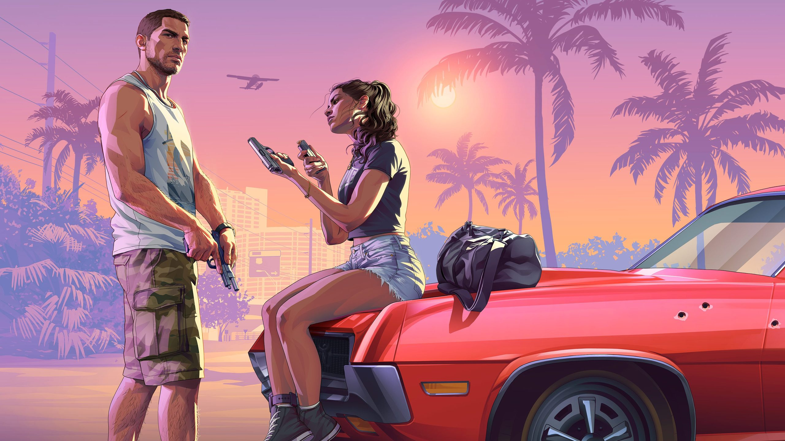

Neu · 15.10.2026
Launch-Trailer
Rund anderthalb Minuten, ohne Vorankündigung fünf Wochen vor dem Start veröffentlicht. Er beginnt in den Leonida Keys, Jason erzählt von seiner Zeit bei der Army („I got in trouble in the army."), dann folgen Banküberfälle, eine Flucht im Hubschrauber, ein Kampf auf dem Airboat — und Jason und Lucia so nah wie nie. Unterlegt mit „Flower in a Hurricane", der neuen Single des französischen Duos Justice, das auch den Original-Score des Spiels komponiert hat — mit Tame Impala, SZA und King Gizzard & The Lizard Wizard.